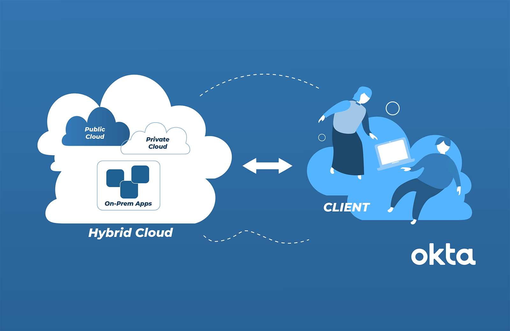

Website
Complete Website Layout


Welcome to my cloud info page. The main domain services cloud provide is Saas, Paas, Iaas.
Saas stands for Software as a service it is a software distribution model in which a cloud provider hosts applications and makes them available to end users over the internet.
PaaS is known as Platform as a service whereas it is a cloud computing model where a third-party provider delivers hardware and software tools to users over the internet.
IaaS is a short form of Infrastructure as a service (IaaS) it is a form of cloud computing that provides virtualized computing resources over the internet.
Microsoft Azure, often referred to as Azure, is a cloud computing platform operated by Microsoft that provides access, management, and development of applications and services via around the world-distributed data centers. Azure offers a large collection of services.These services and resources include storing your data and transforming it.
See Info
Modernise your apps and services on Google Cloud's scalable infrastructure.Google Cloud client libraries expose APIs for two main purposes: App APIs provide access to services. App APIs are optimized for supported languages, such as Node.
See Info
AWS stands for Amazon Web Service that manages the infrastructure all the way to the hypervisor. Everything above that is your responsibility, like managing the guest operating system, the MySQL engine, or the data in it.
Info